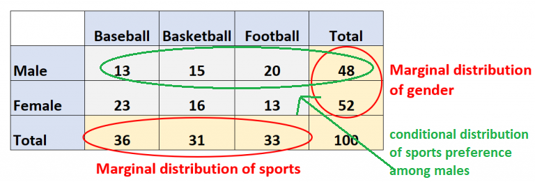

Researches about pure theory (T)
T4. Concept of distribution. Univariate and multivariate. Conditional and marginal distributions.Researches about applications (A)
A2. Make a simple demo program which uses the objects RANDOM and TIMER in C# and VB.NETResearches about theory relevant to applications (TA)
TA2. Summarize the main aspects of the CSV protocol RFC 4180 (definition and rules)T4.
To talk about distribution we need a dataset, containing the statistical units, the attributes, and their relative values.
We define as "relative frequency" the number of units that have a value of a selected attribute, over the total number of units.
We made an example in class regarding eye colour of the students. We analyzed how many students have blue eyes.
For example if we have 10 students and 2 of them have blue eyes, we can say that the relative frequency of blue eyes is 2/10.
So we can define "distribution" as the set of relative frequencies regarding a choosen attribute (in our case eye colour).
In our example the distribution of eye colour can for example be 2/10 blue, 6/10 brown and 2/10 green, the sum of all the values should always be 1.
The distribution is done in a different table and the data come from the initial dataset.
If we analyse only one attribute we define the distribution "univariate" (in our case the eye colour).
Otherwise if we analyse more than one attribute the distribution is called "multivariate" and it is done through the "join frequency"
(if two it is called "bivariate" (for example eye colour and height)).
We define "marginal distribution" as the distribution of the individual variables.
In a two-way table, the marginal distributions are shown in the margins of the table.
If we consider only one column or one row from a multivariate distribution we retrieve a univariate distribution, the so called
marginal distribution.
In fact we override the influence of the other distributions (it is used to focus on a specific attribute).
On the other hand we call "conditional distribution" the distribution of one attribute in relation to another one.

A2.
C#:
There are 2 buttons, one to start, the other to pause. When the start button is clicked,
a colour is randomly chosen between green, yellow, blue and red.
The chosen colour is then written in the box, the box changes colour according to the colour.
The first colour which is randomly chosen 10 times gets printed and then the timer is stopped.
Source code!
VB.NET:
Randomly generates numbers between 0 and 1. It is possible to pause or reset.
There is also the possibility to increase or decrease the speed of the clock.
The distribution of numbers is calculated and shown through histograms.
Source code!
A3.
VB.NET:
It allows a csv file to be displayed. This file is loaded using a button.
Source code!
A4.
C#:
A csv file can be displayed in a data grid using a button.
It is possible to click a column to perform distributions and analyse the data. Via the reset button we reset the data.
Source code!
TA2.
CSV (Comma Separated Values) is a simple format for representing a rectangular array (matrix) of numeric and textual values.
It is an example of a "flat file" format. It is a delimited data format that has fields/columns separated by the comma character %x2C
(Hex 2C) and records/rows/lines separated by characters indicating a line break.
RFC 4180 stipulates the use of CRLF pairs to denote
line breaks, where CR is %x0D (Hex 0D) and LF is %x0A (Hex 0A).
Each line should contain the same number of fields, in the same order.
Data within fields is interpreted as a sequence of characters, not as a sequence of bits or bytes.
Fields that contain a special character (comma, CR, LF, or double quote), must be "escaped" by
enclosing them in double quotes (Hex 22).
An optional header line may appear as the first line
of the file with the same format as normal record lines.
This header will contain names corresponding to the fields in the file and should contain the
same number of fields as the records in the rest of the file.
The last record in the file may or may not end with a line break. CSV commonly employs
US-ASCII as character set, but other character sets are permitted.
The Library of Congress Recommended Formats Statement (RFS) includes CSV as a preferred format for datasets.
CSV may be used at any stage in the lifecycle of a dataset.
Widely used as an exchange format for tabular data. Although very limited in functionality,
there are many data exchange or data preservation contexts for which it is adequate,
particularly when the syntax and semantics of fields are described in ancillary
documentation that is also exchanged or preserved.
CSV files can be imported and exported by
almost any software designed for storing or manipulating data, including relational database
systems, spreadsheet software, and statistical analysis software.
It is a simple text-based format that is very transparent, being both human-readable and easily machine-processable.